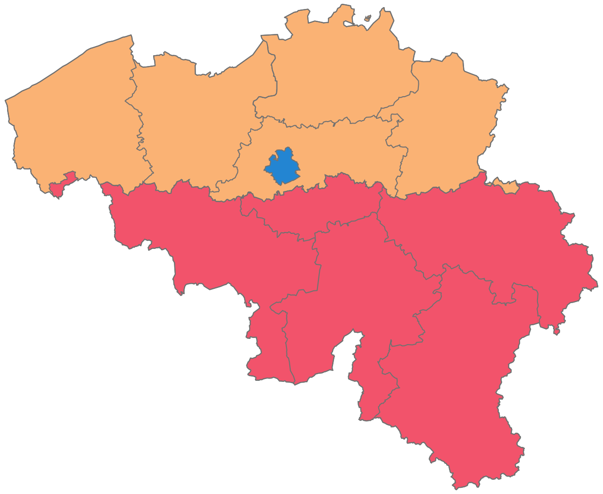
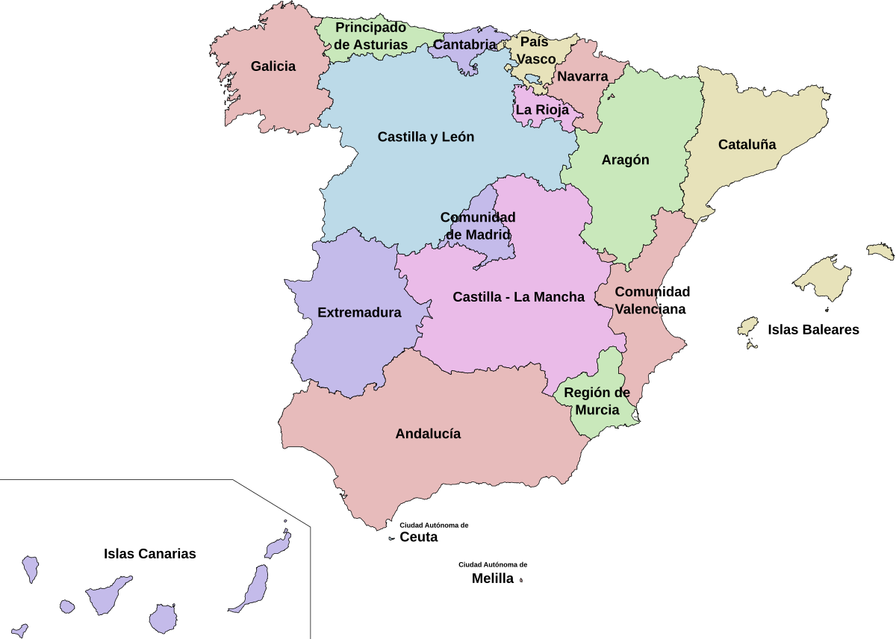
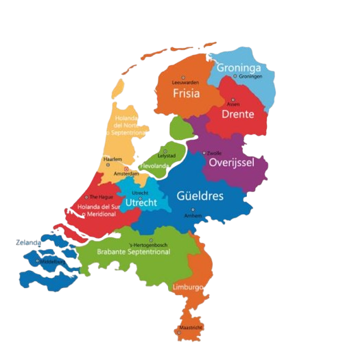
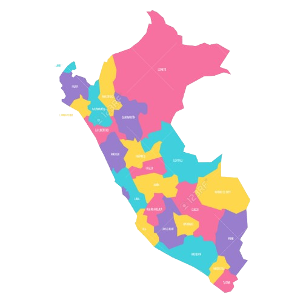
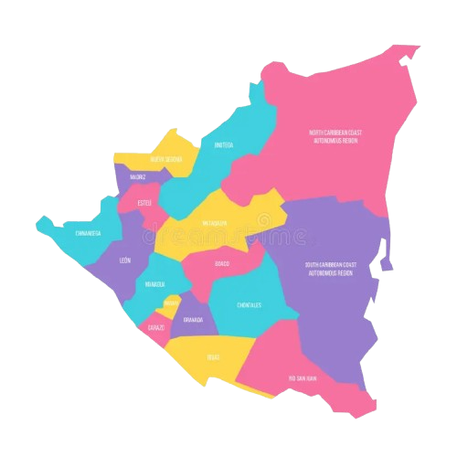
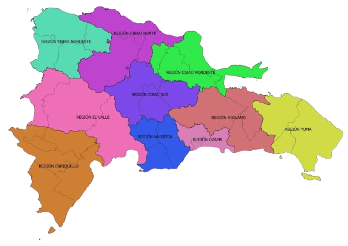

Puede que esta pregunta sea muy descabellada, pero y si, ¿no?
"¿Y si realmente no me gusta?"
"Tal vez su cultura me choque... O peor, su gastronomia"
Son preguntas que una persona se puede llegar a hacer, por eso este blog ha llegado a ti
Aquí se resolverán tus dudas con nuestra corta lista de paises,
los cuales son los siguientes:
Bélgica, es un país pequeño pero fascinante en el corazón de Europa, es conocido por su rica diversidad cultural y política.
En la actualidad, se ha convertido en un centro internacional, especialmente en Bruselas, donde se encuentran la sede de la Unión Europea y la OTAN.
Un aspecto intrigante de su historia reciente es el legado de Leopoldo II, cuya ambición transformó al Congo en una colonia personal.
Su brutal explotación ha dejado cicatrices que aún resuenan en el país. Esta historia oscura nos invita a reflexionar sobre las complejidades de la colonización.
Hoy en día, Bélgica es un ejemplo de diversidad, con tres regiones y tres comunidades lingüísticas que reflejan su rica herencia cultural.
Su política actual, a menudo marcada por tensiones entre flamencos y valones, ofrece un contexto fascinante para los extranjeros interesados en comprender
las dinámicas sociales y políticas que dan forma al país.
Culturalmente, el país se divide siempre en tres zona lingüísticas, generalmente Flamenca ,
Francesa
y Germanófoba ,
cada una con sus propio lenguaje y cultura propia. 
Actualmente, podemos encontrar que Bélgica se encuentra dividida en tres regiones politicas;
Flandes (amarillo); Región Valona (rojo) y Bruselas-Capital (azul).
La cultura Belga, es dificil de escribir, ya que como se ha dicho, esta divido en tres regiones;
Si entramos en sus zonas lingüísticas, podemos ver mejor la cultura de cada uno; en este texto,
solo se hara un breve resumen:
Bélgica tiene una rica tradición cultural, destacada por su arte medieval, arquitectura gótica
y su influencia en la pintura flamenca.
La gastronomía de Bélgica es famosa por sus chocolates finos, cervezas artesanales y gofres crujientes.
También destacan los mejillones con papas fritas, un plato tradicional, y
las "carbonnades flamandes", un guiso de carne cocido en cerveza.
Los ingredientes frescos y la influencia tanto francesa como alemana son claves en su cocina.
La historia de España comienza con los asentamientos prehistóricos, seguidos por la influencia de íberos, celtas
y colonizadores como fenicios y romanos. Tras la caída del Imperio Romano, la península fue dominada por
visigodos y luego por musulmanes hasta la Reconquista cristiana en 1492.
En la Edad Moderna, España se convirtió en un imperio global.
En el siglo XX, tras la Guerra Civil y la dictadura de Franco, se estableció la democracia en 1978.

España, no tiene una cultura unica, ya que esta dividida en 17 comunidades autónomas,
por españa (y la peninsula en sí), han pasado muchos pueblos, como:
los romanos, los visigodos, los moros, etc;
el país ha adoptado multiples culturas, y por lo tanto, la cultura española,
es una mezcla de todas ellas;
pero podemos dividir la cultura española en varías zonas,
como la cultura valenciana ,
la cultura andaluza , la cultura catalana , la cultura gallega
y la cultura vasca , entre otras.
En España podemos encontrarnos mucha variedad de platos,
cada una con sus propios platos típicos, como:
Paella valenciana , tortilla de patatas y gazpacho andaluz , entre otros.
Los Países Bajos, inicialmente habitados por tribus germánicas, se unieron en ducados y condados durante la Edad Media.
La Guerra de los Ochenta Años (1568-1648) llevó a su independencia de España, marcando el inicio de su Siglo de Oro en el siglo XVII,
cuando se convirtieron en una potencia marítima. En el siglo XIX, tras la ocupación napoleónica, se estableció el Reino de los Países Bajos.
El país enfrentó la ocupación alemana durante la Segunda Guerra Mundial y, en la posguerra, se reconstruyó, uniéndose a organizaciones internacionales.
Hoy son conocidos por su democracia, economía abierta y compromiso con los derechos humanos.

La cultura neerlandesa es conocida por su apertura, tolerancia y un profundo sentido
de la libertad individual. País de artistas icónicos como Rembrandt y Van Gogh,
Países Bajos tiene una rica tradición en las artes visuales.
La arquitectura y los molinos de viento, junto con los tulipanes y los canales,
son emblemas nacionales. Los neerlandeses valoran mucho la igualdad,
reflejada en su enfoque directo
y en el respeto por el tiempo y el espacio personal. Su cultura ciclista es única,
Ámsterdam y otras ciudades están adaptadas para este transporte.
Además, el sentido de comunidad y el respeto por el medio ambiente son esenciales en su vida cotidiana.
Paises Bajos, conocidos por su amor a la comida, tienen una gastronomía rica y variada.
Algunos de los platos típicos son:
Stamppot , Erwtensoep y Poffertjes , entre otros.
Perú es conocido por su rica historia precolombina, destacando el Imperio Inca, que dominó gran parte de América del Sur
hasta la llegada de los españoles en el siglo XVI. Francisco Pizarro y sus hombres conquistaron el imperio en 1532, marcando el inicio de la colonización española.
En 1821, Perú declaró su independencia, consolidándose en 1824 tras las batallas de Junín y Ayacucho. A lo largo del siglo XX,
Perú experimentó períodos de inestabilidad política, conflictos internos y reformas, como la dictadura militar de Juan Velasco Alvarado en los años 60
y el conflicto armado con Sendero Luminoso en los 80 y 90. Actualmente, Perú es una república democrática con una economía en desarrollo.

La cultura peruana es una fusión de sus antiguas tradiciones indígenas, como las del Imperio Inca,
y la herencia colonial española. La diversidad de su cultura se refleja en sus múltiples lenguas
(el español, el quechua y el aimara), su música (como la marinera y los huaynos),
y sus coloridos tejidos y vestimentas tradicionales.
Además, Perú es hogar de fiestas y celebraciones únicas como el Inti Raymi (Fiesta del Sol)
en Cusco y la Festividad de la Virgen de la Candelaria en Puno, donde se combinan elementos religiosos y culturales prehispánicos.
La gastronomía peruana es famosa en el mundo, con platos icónicos como el ceviche, el lomo saltado y la causa.
La historia de Nicaragua tiene raíces indígenas, con pueblos como los chorotegas y nicaraos antes de la llegada de los españoles en el siglo XVI.
Nicaragua fue colonizada por los españoles, convirtiéndose en parte del Virreinato de Nueva España. Logró su independencia en 1821,
formando parte brevemente de las Provincias Unidas de Centroamérica antes de convertirse en república independiente en 1838.
En el siglo XX, la política de Nicaragua estuvo marcada por intervenciones de Estados Unidos, dictaduras, como la dinastía de los Somoza,
y la Revolución Sandinista en los años 70 y 80. Hoy en día, Nicaragua enfrenta desafíos políticos y sociales, pero sigue desarrollándose como nación independiente.

La cultura de Nicaragua es una mezcla de tradiciones indígenas, españolas y africanas,
especialmente en la costa Caribeña. La música y el baile tienen un papel importante,
con géneros como la marimba en el Pacífico y el palo de mayo en la costa Atlántica.
Las leyendas y cuentos populares también son una parte importante del folclore nicaragüense,
con personajes como la Mocuana y la Cegua. En literatura, destaca el poeta Rubén Darío,
padre del modernismo en lengua española. Entre sus festividades, sobresale La Purísima,
una celebración a la Virgen María que se realiza en diciembre y reúne a comunidades de todo el país.
La gastronomía incluye platos como el gallo pinto, el vigorón y el nacatamal.
Los taínos habitaban la isla de La Española, donde hoy se encuentran República Dominicana y Haití, antes de la llegada de Cristóbal Colón en 1492.
Fue el primer asentamiento español en América. En el siglo XVII, la isla se dividió entre los franceses y los españoles, y en 1821,
la República Dominicana declaró su independencia de España, aunque pronto fue ocupada por Haití. En 1844, logró su independencia definitiva,
pero sufrió intervenciones de Estados Unidos y dictaduras, incluida la de Rafael Trujillo en el siglo XX. Tras su asesinato, el país avanzó hacia la democracia,
y hoy es una de las economías más fuertes del Caribe, destacándose por su turismo y cultura.

La cultura dominicana se caracteriza por su vibrante música y danza, destacando géneros
como el merengue y la bachata, que son reconocidos mundialmente. Su folclore incluye ritmos
afrocaribeños y europeos, y el país celebra numerosas fiestas populares,
siendo el Carnaval Dominicano una de las más importantes, llena de coloridas máscaras y
comparsas. En literatura, destacan escritores como Juan Bosch y Julia de Burgos.
Además, el béisbol es una gran pasión nacional, y República Dominicana es una fuente importante de
jugadores para las ligas mayores de Estados Unidos.
La gastronomía mezcla influencias taínas, africanas y españolas, con platos como el mangú, la bandera dominicana y los tostones.